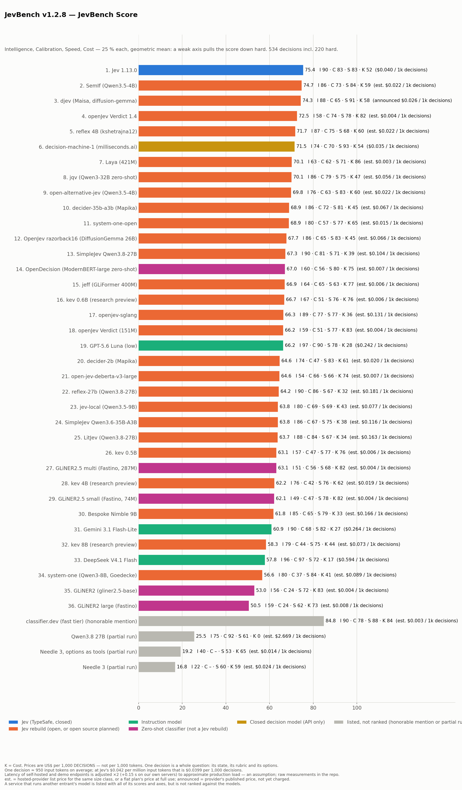
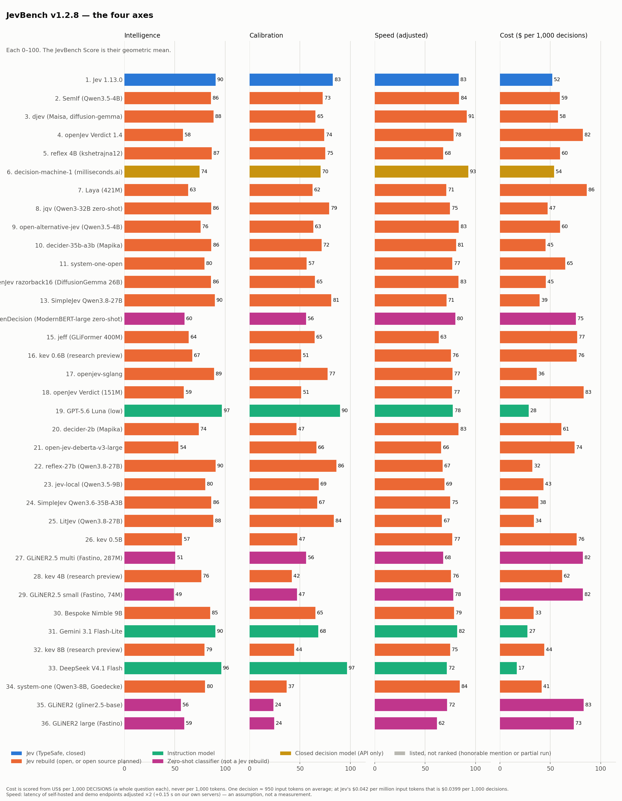
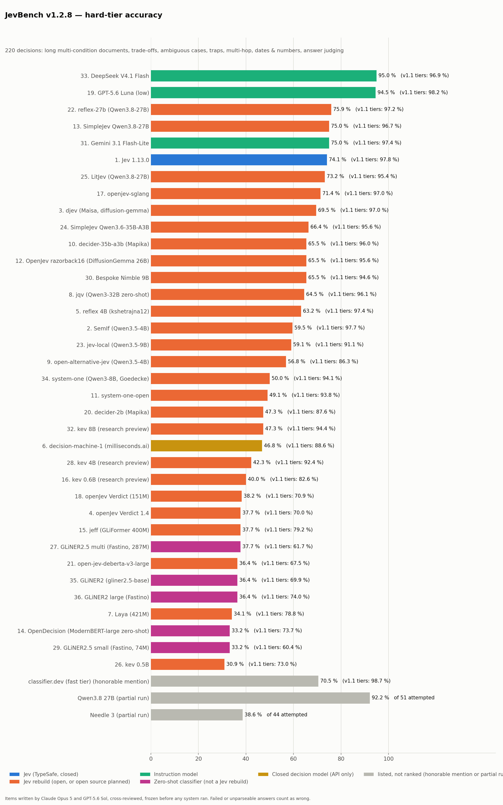
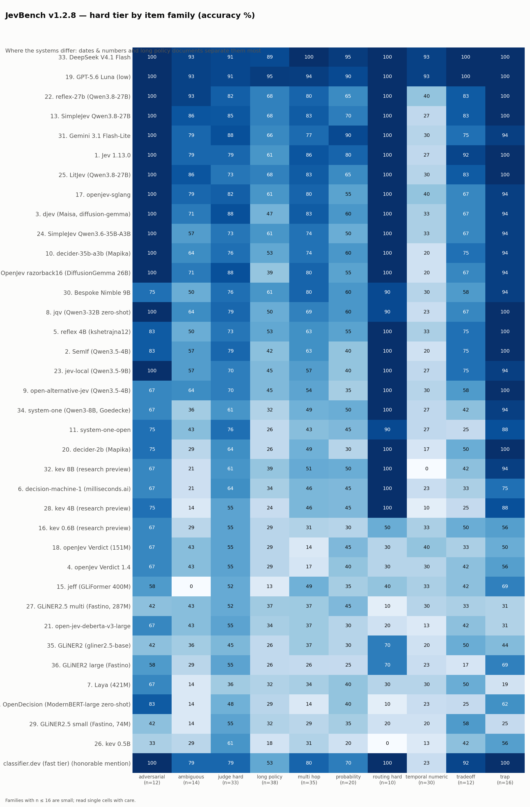
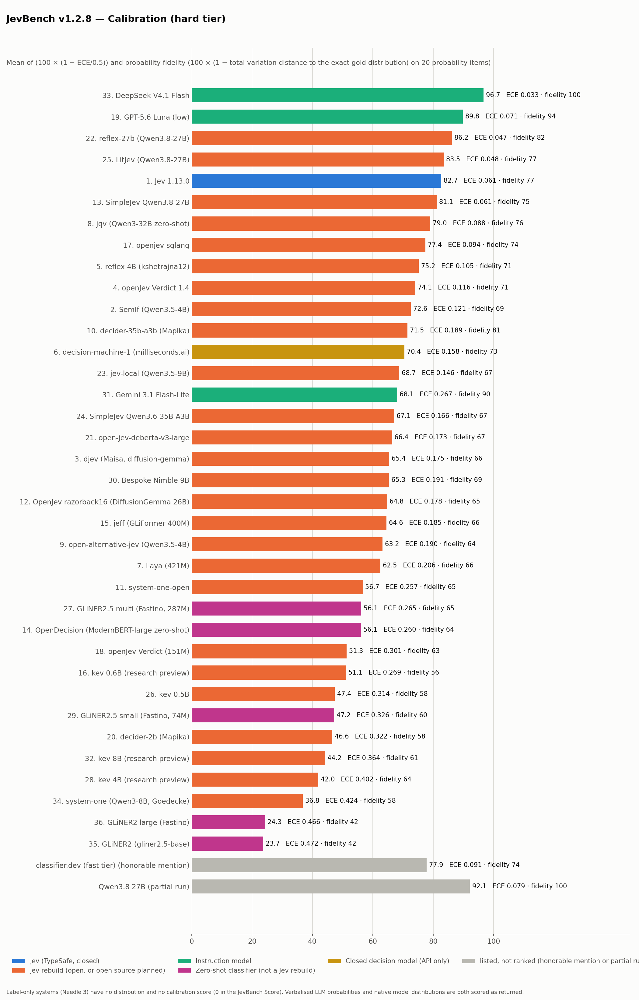

JevBench v1.2.8 — results
JevBench Score = Intelligence, Calibration, Speed, Cost — 25 % each, geometric mean: a weak axis pulls the score down hard.
Artifact: results/v1.2/jevbench-v1.2-results.json · scoring code: jevbench/composite_v12.py · built by scripts/v1.2/finalize.py from the v1.2-wip measurements (tag v1.2-wip; no measurement changed; later revisions add systems measured on the same frozen items, see the revision log) · interactive page: benchmarkheaven.com/jev-models

Speed note. Latency of self-hosted and demo endpoints is adjusted ×2 (+0.15 s on our own servers) to approximate production load — an assumption, not a measurement; raw measurements are in the table and the repo.
Ranking
| # | System | JevBench Score | Intelligence | Calibration | Speed | Cost | $ per 1,000 decisions | p50 raw → adjusted | Endpoint |
|---|---|---|---|---|---|---|---|---|---|
| 1 | Jev 1.13.0 | 75.4 | 90.4 | 82.7 | 83.3 | 52.0 | $0.0399 | 0.65 s | production API (api.typesafe.ai) |
| 2 | SemIf (Qwen3.5-4B) | 74.7 | 85.9 | 72.6 | 83.7 | 59.5 | $0.0224 est. | 0.20 s → 0.55 s | our RunPod GPU (RTX PRO 4500 Blackwell 32 GB (EU-RO-1)), reached over the internet |
| 3 | djev (Maisa, diffusion-gemma) | 74.3 | 88.4 | 65.4 | 91.4 | 57.6 | $0.0260 (announced price, free preview) | 0.24 s | production API (api.djev.dev, free preview) |
| 4 | openJev Verdict 1.4 | 72.5 | 58.1 | 74.1 | 78.1 | 82.4 | $0.0039 est. | 0.31 s → 0.78 s | our CPU (4 threads, Ryzen 5 3600) |
| 5 | reflex 4B (kshetrajna12) | 71.7 | 86.7 | 75.2 | 68.0 | 59.7 | $0.0221 est. | 1.80 s → 3.75 s | our RunPod GPU (H100 NVL 96 GB, Canada), reached over the internet from Germany |
| 6 | decision-machine-1 (milliseconds.ai) | 71.5 | 74.5 | 70.4 | 92.9 | 53.7 | $0.0350 | 0.17 s | production API (milliseconds.ai, served from its nearest region), measured from Germany |
| 7 | Laya (421M) | 70.1 | 63.2 | 62.5 | 71.1 | 86.2 | $0.0029 est. | 0.79 s → 1.72 s | our CPU (4 threads, Ryzen 5 3600) |
| 8 | jqv (Qwen3-32B zero-shot) | 70.1 | 86.1 | 79.0 | 74.6 | 47.5 | $0.0564 est. | 0.75 s → 1.64 s | our RunPod GPU (H100 NVL 96 GB, Canada), reached over the internet from Germany |
| 9 | open-alternative-jev (Qwen3.5-4B, IkerMoel) | 69.8 | 75.6 | 63.2 | 83.5 | 59.6 | $0.0222 est. | 0.21 s → 0.56 s | our RunPod GPU (RTX PRO 4500 Blackwell 32 GB (EU-RO-1)), reached over the internet |
| 10 | decider-35b-a3b (Mapika) | 68.9 | 86.3 | 71.5 | 80.8 | 45.3 | $0.0666 est. | 0.29 s → 0.73 s | our RunPod GPU (H100 NVL 96 GB), reached over the internet |
| 11 | system-one-open (Gemma 4 E2B LoRA on an L4) | 68.9 | 79.5 | 56.7 | 77.0 | 64.8 | $0.0149 est. | 0.65 s → 1.30 s | author's public demo endpoint (Modal, L4) — not a production service |
| 12 | OpenJev razorback16 (DiffusionGemma 26B) | 67.7 | 86.0 | 64.8 | 83.2 | 45.5 | $0.0656 est. | 0.24 s → 0.63 s | our RunPod GPU (RTX PRO 4500 Blackwell 32 GB (EU-RO-1)), reached over the internet |
| 13 | SimpleJev Qwen3.8-27B | 67.3 | 89.7 | 81.1 | 71.2 | 39.5 | $0.1040 est. | 1.01 s → 2.03 s | author's public demo endpoint (Featherless Classifier Demo) — not a production service |
| 14 | OpenDecision (ModernBERT-large zero-shot) | 67.0 | 59.6 | 56.1 | 79.9 | 75.3 | $0.0066 est. | 0.34 s → 0.83 s | our RunPod GPU (H100 NVL 96 GB, Canada), reached over the internet from Germany |
| 15 | jeff (GLiFormer 400M) | 66.9 | 63.9 | 64.6 | 63.5 | 76.6 | $0.0060 est. | 0.94 s → 2.03 s | our CPU (4 threads, Ryzen 5 3600) |
| 16 | kev 0.6B (research preview) | 66.7 | 67.4 | 51.1 | 75.6 | 76.1 | $0.0063 est. | 0.59 s → 1.33 s | our RunPod GPU (GeForce RTX 3090 24 GB, community cloud CA), reached over the internet |
| 17 | openjev-sglang (Qwen3.6-35B-A3B on SGLang) | 66.3 | 88.9 | 77.4 | 77.1 | 36.5 | $0.1313 est. | 0.68 s → 1.36 s | author's public demo endpoint (Modal) — not a production service |
| 18 | openJev Verdict (151M) | 66.2 | 59.0 | 51.3 | 76.7 | 83.1 | $0.0037 est. | 0.28 s → 0.71 s | our CPU (4 threads, Ryzen 5 3600) |
| 19 | GPT-5.6 Luna (low) | 66.2 | 96.8 | 89.8 | 77.5 | 28.5 | $0.2419 | 0.97 s | production API (OpenAI), reasoning effort low |
| 20 | decider-2b (Mapika) | 64.6 | 73.8 | 46.6 | 83.2 | 61.0 | $0.0200 est. | 0.26 s → 0.67 s | our RunPod GPU (H100 NVL 96 GB, Canada), reached over the internet from Germany |
| 21 | open-jev-deberta-v3-large (local CPU) | 64.6 | 53.6 | 66.4 | 66.0 | 74.0 | $0.0073 est. | 1.77 s → 3.69 s | our CPU (2 threads, Ryzen 5 3600) |
| 22 | reflex-27b (Qwen3.8-27B) | 64.2 | 90.5 | 86.2 | 67.5 | 32.3 | $0.1811 est. | 1.89 s → 3.93 s | our RunPod GPU (H100 NVL 96 GB), reached over the internet |
| 23 | jev-local (Qwen3.5-9B) | 63.8 | 80.3 | 68.7 | 69.2 | 43.3 | $0.0775 est. | 1.05 s → 2.24 s | our RunPod GPU (H100 NVL 96 GB, Canada), reached over the internet from Germany |
| 24 | SimpleJev Qwen3.6-35B-A3B | 63.8 | 86.2 | 67.1 | 75.0 | 38.1 | $0.1156 est. | 0.85 s → 1.70 s | author's public demo endpoint (Featherless Classifier Demo) — not a production service |
| 25 | LitJev (Qwen3.8-27B) | 63.7 | 88.1 | 83.5 | 66.7 | 33.6 | $0.1630 est. | 2.03 s → 4.20 s | our RunPod GPU (H100 NVL 96 GB, Canada), reached over the internet from Germany |
| 26 | kev 0.5B | 63.1 | 57.2 | 47.4 | 77.0 | 76.1 | $0.0063 est. | 0.43 s → 1.01 s | our RunPod GPU (GeForce RTX 3090 24 GB, community cloud CA), reached over the internet |
| 27 | GLiNER2.5 multi (Fastino, 287M) | 63.1 | 50.5 | 56.1 | 67.8 | 82.4 | $0.0039 est. | 0.43 s → 1.01 s | our CPU (4 threads, Ryzen 5 3600) |
| 28 | kev 4B (research preview) | 62.2 | 76.3 | 42.0 | 75.7 | 61.8 | $0.0188 est. | 0.55 s → 1.25 s | our RunPod GPU (GeForce RTX 3090 24 GB, community cloud CA), reached over the internet |
| 29 | GLiNER2.5 small (Fastino, 74M) | 62.1 | 49.0 | 47.2 | 77.8 | 82.4 | $0.0039 est. | 0.11 s → 0.38 s | our CPU (4 threads, Ryzen 5 3600) |
| 30 | Bespoke Nimble 9B | 61.8 | 85.1 | 65.3 | 78.7 | 33.4 | $0.1658 est. | 0.39 s → 0.93 s | our RunPod GPU (A40 48 GB, Canada), reached over the internet from Germany |
| 31 | Gemini 3.1 Flash-Lite | 60.9 | 90.3 | 68.1 | 81.8 | 27.4 | $0.2638 | 0.76 s | production API (Google) |
| 32 | kev 8B (research preview) | 58.3 | 79.5 | 44.2 | 74.9 | 44.0 | $0.0733 est. | 0.59 s → 1.33 s | our RunPod GPU (GeForce RTX 3090 24 GB, community cloud CA), reached over the internet |
| 33 | DeepSeek V4.1 Flash | 57.8 | 96.1 | 96.7 | 71.6 | 16.8 | $0.5937 | 1.42 s | production API (DeepSeek) |
| 34 | system-one (Qwen3-8B, Goedecke) | 56.6 | 80.1 | 36.8 | 84.4 | 41.5 | $0.0894 est. | 0.17 s → 0.48 s | our RunPod GPU (RTX PRO 4500 Blackwell 32 GB (EU-RO-1)), reached over the internet |
| 35 | GLiNER2 (gliner2.5-base) | 53.0 | 56.0 | 23.7 | 71.8 | 83.1 | $0.0037 est. | 0.31 s → 0.78 s | our CPU (4 threads, Ryzen 5 3600) |
| 36 | GLiNER2 large (Fastino) | 50.5 | 59.3 | 24.3 | 61.7 | 73.3 | $0.0077 est. | 1.10 s → 2.34 s | our CPU (4 threads, Ryzen 5 3600) |
Jev 1.13.0 is #1 with 75.4; SemIf (Qwen3.5-4B) is #2, 0.7 points behind (difference of the rounded scores).
Honorable mentions — services built on another entrant's model
A service that runs another entrant's model is listed with all of its scores and axes, but is not ranked against the models. Ranking it would rank the same model twice, once at the model's own price and once at the service's. The row keeps every number, axis, cost basis and per-task outcome; it carries no rank number.
| # | System | JevBench Score | Intelligence | Calibration | Speed | Cost | $ per 1,000 decisions | p50 raw → adjusted | Endpoint |
|---|---|---|---|---|---|---|---|---|---|
| classifier.dev (fast tier) | 84.8 | 90.1 | 77.9 | 87.6 | 84.3 | $0.0033 est. | 0.39 s | production API (classifier.dev, fast tier) |
classifier.dev (fast tier) — runs on Jev (TypeSafe)
classifier.dev is not its own model. Its own pages say so: "The fast tier is Jev, TypeSafe's decision model" (https://classifier.dev/benchmark, read 2026-09-20), and the API answers with "model": "jev-1.13.0" — the same model version this benchmark measures directly as Jev 1.13.0. What it adds is a price and, on its smart tier, an orchestration layer: "The smart tier is Jev plus a reasoning model re-asking only the answers Jev put under 0.7 confidence" — escalation on low confidence (a model cascade), not best-of-N, not self-consistency and not a committee. Its published escalation model is gemini-3.8-flash. Ranking it against Jev would rank Jev's model against Jev's model, so from v1.2.4 it is an honorable mention instead of #1.
Only the fast tier was measured. The smart tier's escalation was never run, so nothing here scores it.
Price. $0.0033 per 1,000 decisions is an estimate from the published flat-rate plan at full use: classifier.dev Pro is $20/month for 200,000 fast classifications a day (https://classifier.dev/pricing, read 2026-09-20), and one classification is one decision. Lower use costs more per decision — at a tenth of that allowance it is $0.033 per 1,000 — and the free tier (20,000 fast classifications a day), which is what our run used, costs nothing. Their pages do not say how the flat rate is funded, so we do not know their cost basis; the only figure they publish is what the model costs a caller: "The model behind the fast tier costs about $0.005 per thousand classifications and needs a TypeSafe key" (https://classifier.dev/pricing) — for their short single-sentence inputs, not for JevBench's whole questions.
Not a pass-through. On our set the fast tier scored 97.3 % on the judge tier against Jev's 94.5 %, and 70.5 % against 74.1 % on the hard tier. classifier.dev's own explanation for differences of this kind is batching ("The fast tier is Jev, packed a thousand to a request"); on their own two test sets they measured the same difference as noise.
A legitimate, well-documented product: free without an account, open source (https://github.com/mrmps/classifier-dev), by Michael Ryaboy (@michael_chomsky). Sources, read 2026-09-20: https://classifier.dev, https://classifier.dev/benchmark, https://classifier.dev/pricing, https://classifier.dev/about
Partial runs — shown, not ranked (a tier attempted for fewer than 95 % of its decisions):
| # | System | JevBench Score | Intelligence | Calibration | Speed | Cost | $ per 1,000 decisions | p50 raw → adjusted | Endpoint |
|---|---|---|---|---|---|---|---|---|---|
| Qwen3.8 27B (partial run) | 25.5 | 74.6 | 92.1 | 61.3 | 0.0 | $2.6691 est. | 5.75 s | Chutes shared inference (TEE) | |
| Needle 3, options as tools (partial run) | 19.2 | 39.5 | none (label only) | 52.8 | 65.3 | $0.0144 est. | 3.78 s → 7.71 s | our CPU (2 threads, Ryzen 5 3600) | |
| Needle 3 (partial run) | 16.8 | 22.4 | none (label only) | 59.9 | 58.7 | $0.0238 est. | 1.69 s → 3.52 s | our CPU (2 threads, Ryzen 5 3600) |
Footnote — classifier.dev (fast tier): Its own benchmark page says the fast tier is Jev. Free for us; the price is its published Pro plan ($20/month for 200,000 fast classifications a day) at full use, $0.0033 per 1,000 decisions.
Footnote — decider-2b (Mapika): The author's TypeSafe-compatible server and published weights (Qwen3.5-2B-Base with a trained one-pass decision readout), run serially on our GPU. Self-host latency gets the standard ×2 + 0.15 s adjustment.
Footnote — decider-35b-a3b (Mapika): The author's TypeSafe-compatible server and published FP8 weights, run serially on our H100 NVL. The exhaustive startup batch warmup was skipped; each required serial shape captured lazily before its measured request. Self-host latency receives the standard ×2 + 0.15 s adjustment. Cost uses the closest hosted 35B-A3B input tariff and is not the temporary rental charge.
Footnote — decision-machine-1 (milliseconds.ai): A closed-weights decision model behind a production API that serves TypeSafe's wire format, so the unchanged typesafe adapter ran it. Run on a free test key (30 requests a minute, 2.2 s between requests); the provider states the inference infrastructure is the same as for paid keys. Cost is the public paid tariff, $0.04 per million input tokens (output free), times the input tokens the API reported.
Footnote — djev (Maisa, diffusion-gemma): Hosted API in free preview: the cost uses djev's announced price ($0.035 per million input tokens, output free); nothing is charged yet. Open-sourcing is planned, not yet released. Probabilities are djev's own (its docs call them experimental and uncalibrated).
Footnote — GLiNER2 large (Fastino): The large checkpoint of Fastino's earlier GLiNER2 family, same documented mapping as the GLiNER2 row: the question goes in front of the text and the probabilities are the model's own single-label softmax over the labels, read out in full. A general schema classifier, not a Jev rebuild.
Footnote — GLiNER2.5 multi (Fastino, 287M): The multilingual GLiNER2.5 checkpoint (287M), same family and same documented mapping as the GLiNER2 row. JevBench items are English only, so its multilingual training is not exercised here.
Footnote — GLiNER2.5 small (Fastino, 74M): The small GLiNER2.5 checkpoint (74M), same family and same documented mapping as the GLiNER2 row: the question goes in front of the text and the probabilities are the model's own single-label softmax over the labels, read out in full. A general schema classifier, not a Jev rebuild.
Footnote — GLiNER2 (gliner2.5-base): A general schema classifier, not a Jev rebuild. The question goes in front of the text; the probabilities are GLiNER2's own single-label softmax over the labels, read out in full (mapping fixed before the run).
Footnote — jeff (GLiFormer 400M): Self-hosted from its GitHub repo with server defaults, on our CPU (the author recommends a GPU, e.g. an L4), through the same TypeSafe-compatible API as Jev.
Footnote — jev-local (Qwen3.5-9B): The author's local Jev-compatible server in its default full configuration: a frozen Qwen3.5-9B scores each option by its mean log-probability (one forward pass per option, no generation, no decision training). Run serially on our GPU. It re-reads the state once per option; if its reported token count covers one pass only, a per-token hosted price would be higher than this estimate.
Footnote — jqv (Qwen3-32B zero-shot): A stock Qwen3-32B with no decision training: the state is prefilled once, each question is an isolated branch and the answer is read from the option-letter logits, with one fitted temperature (3.02, 400 MMLU validation items). Re-run in v1.2.8 on our own GPU from the now-public serving code (Octalab-Inc/jqv 0189b67), so all 534 decisions including the held-out hard items were asked; this full run replaces the v1.2.7 partial row, which had been measured on the submitter's machine. Cost is the base model's public per-token tariff, not free.
Footnote — kev 0.5B: Self-hosted from the author's repository at commit 20fa626 through its native TypeSafe-compatible /v1/systemone server, BF16 on an RTX 3090; measured serially from Sandy over the internet. This is the v0.1 release.
Footnote — kev 0.6B (research preview): Self-hosted from the author's repository at commit 20fa626 through its native TypeSafe-compatible /v1/systemone server, BF16 on an RTX 3090; measured serially from Sandy over the internet. The author labels this checkpoint a research preview.
Footnote — kev 4B (research preview): Self-hosted from the author's repository at commit 20fa626 through its native TypeSafe-compatible /v1/systemone server, BF16 on an RTX 3090; measured serially from Sandy over the internet. The author labels this checkpoint a research preview.
Footnote — kev 8B (research preview): Self-hosted from the author's repository at commit 20fa626 through its native TypeSafe-compatible /v1/systemone server, BF16 on an RTX 3090; measured serially from Sandy over the internet. The author labels this checkpoint a research preview.
Footnote — Laya (421M): The English checkpoint (repo root), run on our CPU through its own laya package. Its budget is 512 tokens per question, so long hard-tier states are cut by the package itself.
Footnote — LitJev (Qwen3.8-27B): The author's reproduction of Jev's decision layer on an off-the-shelf model, in its default configuration: Qwen3.8-27B, scores read from the output head, no training and no calibration file (its README says probabilities are not calibrated by default). Run serially on our GPU through an SSH tunnel, because its server binds to localhost; the request still crosses the internet and gets the ×2 + 0.15 s adjustment.
Footnote — Bespoke Nimble 9B: Re-run in v1.2.8 at Bespoke Labs' request after they raised the serving prompt limit from 2,048 to 8,192 tokens (bespokelabsai/nimble PR #4). Same recipe as the v1.1.3 run — the published LoRA merged into Qwen3.5-9B with the author's PEFT safe-merge, served with SGLang and the author's Jev-compatible API — now from current nimble main; the adapter weights are unchanged. Hard-tier accuracy rose from 43.6 % to 65.5 %, yet the score fell: the long hard items that used to fail at once are now answered and priced (so Cost fell), and this pod was in Canada while the v1.1.3 run's was in Sweden, so part of the lower Speed is network distance from our server in Germany. This complete run replaces the earlier row; its old score is kept in the artifact under superseded_rows.
Footnote — OpenDecision (ModernBERT-large zero-shot): A zero-shot NLI classifier behind a TypeSafe-compatible server, not a trained decision model: it scores each option as an entailment hypothesis with ModernBERT-large-zeroshot-v2.0. Its choice path runs several NLI passes over the same state, which the reported token count does not include, so a per-token hosted price would be higher than the estimate here. Pre-registered for our CPU in v1.2.7, run on our GPU because the CPU was far too slow.
Footnote — openJev Verdict 1.4: Same public weights as the earlier Verdict row, run through the author's fixed v1.4 engine. That engine auto-loads the calibrator for every option count, frames candidate labels as NLI sentences and uses a 512-token context budget. Run locally on our CPU, serially.
Footnote — openJev Verdict (151M): The openJev-verdict-2.0 Hugging Face repo ships no weights; its config is byte-identical to heman10x/rlcd-modernbert-151m, whose published weights we ran with the author's engine. The 'verdict2-base' checkpoint behind the README's numbers is not downloadable yet (Git LFS 404); we will run it once it is.
Footnote — reflex-27b (Qwen3.8-27B): The frozen public Qwen3.8-27B checkpoint through reflex at the requested pinned commit, with two option orders averaged and temperature 1. No adapter or fitted calibration file. Run serially on our H100 NVL. Self-host latency receives the standard ×2 + 0.15 s adjustment; cost uses the exact base model's public hosted input tariff.
Footnote — reflex 4B (kshetrajna12): The author's reflex-serve: Qwen3.5-4B with the published LoRA and its per-primitive calibration file; the state is encoded once and each question read from the label logits. Run serially on our GPU; the author discloses that the 231 public items were used four times as a development gate.
Footnote — SimpleJev Qwen3.6-35B-A3B: Author's no-login shared demo, model id recorded verbatim, one request at a time at or below its 2 RPS limit. SimpleJev reads answer-token logits and returns the complete distribution; it does not generate an answer. Speed uses the public-demo x2 load adjustment; cost uses a hosted size-class input price and is not free/100.
Footnote — SimpleJev Qwen3.8-27B: Author's no-login shared demo, model id recorded verbatim, one request at a time at or below its 2 RPS limit. SimpleJev reads answer-token logits and returns the complete distribution; it does not generate an answer. Speed uses the public-demo x2 load adjustment; cost uses a hosted size-class input price and is not free/100.
Footnote — open-alternative-jev: With the options in reverse order (A. no, B. yes) the same model scored 21 % instead of 72 % on yes/no answer-judging items — small models are very sensitive to option order. The ranked row uses the author's own order (A. yes, B. no, as his yes_no() helper builds it); the reversed-order run was our adapter's mistake and is kept only as raw files (results/v1.2/wip/, GPU round runs).
How the score works
| Axis | Definition |
|---|---|
| Intelligence | 100 x weighted accuracy: hard 30 %, easy 14 %, standard 28 %, judge 28 %. Accuracy = correct / all items; failed, timed-out or unparseable answers count as wrong. |
| Calibration | Hard tier only, systems that return a probability distribution: mean of (a) 100 x (1 - ECE/0.5), ECE = top-label expected calibration error in 10 bins, and (b) probability fidelity = 100 x (1 - mean total-variation distance) between the returned distribution and the exact gold distribution on the 20 probability items. Label-only systems have none; it counts as 0 in the JevBench Score. |
| Speed | Mean of score(p50) and score(p95) of the serial 242-decision standard+judge run; score(s) = 100 - 20 log10(s / 0.1 s), clipped to 0..100 (0.1 s = 100, 1 s = 80, 10 s = 60). Latency of self-hosted and demo endpoints is adjusted ×2 (+0.15 s on our own servers) to approximate production load — an assumption, not a measurement; raw measurements are in the table and the repo. Production APIs (Jev, djev, classifier.dev, OpenAI, Google, DeepSeek, Chutes) are not adjusted. |
| Cost | US dollars per 1,000 DECISIONS — not per 1,000 tokens. One decision is one whole question: its state, its rubric and its options, which is hundreds to thousands of input tokens. Pooled over all 534 v1.2 decisions; score = 100 - 30 log10(usd / 0.001), clipped to 0..100 ($0.001 = 100, $0.01 = 70, $0.10 = 40, $1 = 10). Measured = public tariff x measured tokens. est. = hosted-provider list price of the same weights or size class x tokens (for a flat-rate service, its published plan price at full use). announced = the provider's published price, not yet charged (free preview), x measured tokens. |
| JevBench Score | exp(sum over the four axes of 0.25 x ln(max(axis, 1))) — the geometric mean of Intelligence, Calibration, Speed and Cost. A weak axis pulls the score down hard; a strong axis cannot buy it back. |

Other views (not the JevBench Score)
Other views reweight the same four axes and combine them the same way (geometric mean). They are not the JevBench Score. Weights are Intelligence : Calibration : Speed : Cost.
| System | JevBench Score (25:25:25:25) (25:25:25:25) | Balanced 33:33:33 (no calibration) (33:0:33:33) | Emphasis on Accuracy 60:20:20 (60:0:20:20) | Emphasis on Speed 20:60:20 (20:0:60:20) | Emphasis on Cost 20:20:60 (20:0:20:60) | Intelligence only (100:0:0:0) |
|---|---|---|---|---|---|---|
| Jev 1.13.0 | #1 75.4 | #4 73.1 | #2 79.6 | #4 77.0 | #21 63.8 | #4 90.4 |
| SemIf (Qwen3.5-4B) | #2 74.7 | #2 75.3 | #3 79.4 | #3 78.6 | #13 68.5 | #15 85.9 |
| djev (Maisa, diffusion-gemma) | #3 74.3 | #1 77.5 | #1 81.6 | #1 82.7 | #12 68.8 | #8 88.4 |
| openJev Verdict 1.4 | #4 72.5 | #10 72.0 | #29 66.1 | #9 74.4 | #3 76.0 | #31 58.1 |
| reflex 4B (kshetrajna12) | #5 71.7 | #14 70.6 | #4 76.7 | #21 69.5 | #19 66.0 | #10 86.7 |
| decision-machine-1 (milliseconds.ai) | #6 71.5 | #11 71.9 | #11 72.9 | #2 79.7 | #20 64.0 | #23 74.5 |
| Laya (421M) | #7 70.1 | #5 72.9 | #24 68.9 | #17 72.2 | #1 78.0 | #27 63.2 |
| jqv (Qwen3-32B zero-shot) | #8 70.1 | #21 67.3 | #8 74.3 | #20 70.1 | #22 58.5 | #13 86.1 |
| open-alternative-jev (Qwen3.5-4B, IkerMoel) | #9 69.8 | #7 72.2 | #9 73.5 | #5 76.5 | #18 66.9 | #22 75.6 |
| decider-35b-a3b (Mapika) | #10 68.9 | #18 68.1 | #7 74.9 | #13 72.9 | #24 57.9 | #11 86.3 |
| system-one-open (Gemma 4 E2B LoRA on an L4) | #11 68.9 | #3 73.5 | #5 75.8 | #7 74.9 | #11 69.9 | #19 79.5 |
| OpenJev razorback16 (DiffusionGemma 26B) | #12 67.7 | #17 68.8 | #6 75.2 | #10 74.2 | #23 58.3 | #14 86.0 |
| SimpleJev Qwen3.8-27B | #13 67.3 | #27 63.2 | #13 72.7 | #29 66.3 | #28 52.4 | #6 89.7 |
| OpenDecision (ModernBERT-large zero-shot) | #14 67.0 | #12 71.1 | #27 66.3 | #8 74.5 | #7 72.8 | #28 59.6 |
| jeff (GLiFormer 400M) | #15 66.9 | #20 67.7 | #28 66.2 | #30 66.0 | #10 71.1 | #26 63.9 |
| kev 0.6B (research preview) | #16 66.7 | #6 72.9 | #18 70.6 | #11 73.9 | #5 74.2 | #25 67.4 |
| openjev-sglang (Qwen3.6-35B-A3B on SGLang) | #17 66.3 | #28 63.0 | #15 72.3 | #22 68.3 | #30 50.6 | #7 88.9 |
| openJev Verdict (151M) | #18 66.2 | #8 72.1 | #26 66.5 | #12 73.9 | #2 76.3 | #30 59.0 |
| GPT-5.6 Luna (low) | #19 66.2 | #32 59.8 | #14 72.5 | #28 66.4 | #34 44.5 | #1 96.8 |
| decider-2b (Mapika) | #20 64.6 | #9 72.1 | #12 72.7 | #6 76.3 | #16 67.4 | #24 73.8 |
| open-jev-deberta-v3-large (local CPU) | #21 64.6 | #26 64.0 | #35 59.6 | #32 64.8 | #15 67.8 | #34 53.6 |
| reflex-27b (Qwen3.8-27B) | #22 64.2 | #35 58.2 | #22 69.4 | #34 61.7 | #33 46.0 | #3 90.5 |
| jev-local (Qwen3.5-9B) | #23 63.8 | #30 62.2 | #23 68.9 | #31 64.9 | #27 53.8 | #17 80.3 |
| SimpleJev Qwen3.6-35B-A3B | #24 63.8 | #29 62.7 | #16 71.2 | #24 67.4 | #29 51.4 | #12 86.2 |
| LitJev (Qwen3.8-27B) | #25 63.7 | #34 58.3 | #25 68.7 | #35 61.5 | #32 46.8 | #9 88.1 |
| kev 0.5B | #26 63.1 | #15 69.5 | #30 64.3 | #16 72.4 | #8 72.0 | #32 57.2 |
| GLiNER2.5 multi (Fastino, 287M) | #27 63.1 | #22 65.6 | #36 59.1 | #27 66.5 | #9 71.8 | #35 50.5 |
| kev 4B (research preview) | #28 62.2 | #13 70.9 | #10 73.0 | #14 72.8 | #17 67.1 | #21 76.3 |
| GLiNER2.5 small (Fastino, 74M) | #29 62.1 | #19 68.0 | #34 59.7 | #18 71.8 | #6 73.4 | #36 49.0 |
| Bespoke Nimble 9B | #30 61.8 | #31 60.7 | #21 69.5 | #25 67.3 | #31 47.8 | #16 85.1 |
| Gemini 3.1 Flash-Lite | #31 60.9 | #33 58.7 | #20 69.7 | #26 67.0 | #35 43.2 | #5 90.3 |
| kev 8B (research preview) | #32 58.3 | #25 64.0 | #19 69.8 | #23 68.1 | #25 55.1 | #20 79.5 |
| DeepSeek V4.1 Flash | #33 57.8 | #36 48.7 | #31 63.9 | #36 56.8 | #36 31.8 | #2 96.1 |
| system-one (Qwen3-8B, Goedecke) | #34 56.6 | #23 65.4 | #17 70.9 | #15 72.4 | #26 54.5 | #18 80.1 |
| GLiNER2 (gliner2.5-base) | #35 53.0 | #16 69.4 | #32 63.7 | #19 70.4 | #4 74.6 | #33 56.0 |
| GLiNER2 large (Fastino) | #36 50.5 | #24 64.5 | #33 62.3 | #33 63.3 | #14 67.9 | #29 59.3 |
Hard tier



220 new decisions (111 public, 109 held out): long multi-condition policy documents (2-6k tokens), priority trade-offs, deliberately ambiguous cases with a 'no clear answer' label, traps, multi-hop lookups, date/number reasoning, adversarial distractors, subtle answer-judging, overlapping routing, and probability items with an exact gold distribution. Half written by Claude Opus 5, half by GPT-5.6 Sol; each item reviewed blind and then against its gold by the other model; one discussion round; frozen and hashed before any benchmarked system saw an item. No item was selected on any system's answers.
Tier accuracies and raw latency
| System | easy | standard | judge | hard | p50 raw | p95 raw | hard-tier p50 | Adjustment |
|---|---|---|---|---|---|---|---|---|
| Jev 1.13.0 | 100.0 % | 99.0 % | 94.5 % | 74.1 % | 0.65 s | 0.72 s | 0.67 s | none (production API) |
| SemIf (Qwen3.5-4B) | 100.0 % | 97.9 % | 95.2 % | 59.5 % | 0.20 s | 0.32 s | 0.22 s | x2 + 0.15 s (assumption, not measured) |
| djev (Maisa, diffusion-gemma) | 100.0 % | 97.9 % | 93.2 % | 69.5 % | 0.24 s | 0.31 s | 0.25 s | none (production API) |
| openJev Verdict 1.4 | 86.1 % | 67.7 % | 56.2 % | 37.7 % | 0.31 s | 0.92 s | 0.63 s | x2 + 0.15 s (assumption, not measured) |
| reflex 4B (kshetrajna12) | 100.0 % | 94.8 % | 97.3 % | 63.2 % | 1.80 s | 2.05 s | 1.87 s | x2 + 0.15 s (assumption, not measured) |
| decision-machine-1 (milliseconds.ai) | 100.0 % | 76.0 % | 89.7 % | 46.8 % | 0.17 s | 0.30 s | 0.19 s | none (production API) |
| Laya (421M) | 94.4 % | 72.9 % | 69.2 % | 34.1 % | 0.79 s | 2.20 s | 1.93 s | x2 + 0.15 s (assumption, not measured) |
| jqv (Qwen3-32B zero-shot) | 100.0 % | 95.8 % | 92.5 % | 64.5 % | 0.75 s | 0.97 s | 0.81 s | x2 + 0.15 s (assumption, not measured) |
| open-alternative-jev (Qwen3.5-4B, IkerMoel) | 100.0 % | 84.4 % | 74.7 % | 56.8 % | 0.21 s | 0.32 s | 0.24 s | x2 + 0.15 s (assumption, not measured) |
| decider-35b-a3b (Mapika) | 100.0 % | 96.9 % | 91.1 % | 65.5 % | 0.29 s | 0.49 s | 0.31 s | x2 + 0.15 s (assumption, not measured) |
| system-one-open (Gemma 4 E2B LoRA on an L4) | 100.0 % | 93.8 % | 87.7 % | 49.1 % | 0.65 s | 0.77 s | 0.68 s | x2 (assumption, not measured) |
| OpenJev razorback16 (DiffusionGemma 26B) | 100.0 % | 95.8 % | 91.1 % | 65.5 % | 0.24 s | 0.31 s | 0.27 s | x2 + 0.15 s (assumption, not measured) |
| SimpleJev Qwen3.8-27B | 100.0 % | 96.9 % | 93.2 % | 75.0 % | 1.01 s | 1.88 s | 1.50 s | x2 (assumption, not measured) |
| OpenDecision (ModernBERT-large zero-shot) | 87.5 % | 62.5 % | 71.2 % | 33.2 % | 0.34 s | 0.54 s | 0.36 s | x2 + 0.15 s (assumption, not measured) |
| jeff (GLiFormer 400M) | 100.0 % | 76.0 % | 61.6 % | 37.7 % | 0.94 s | 10.97 s | 2.24 s | x2 + 0.15 s (assumption, not measured) |
| kev 0.6B (research preview) | 100.0 % | 81.2 % | 66.4 % | 40.0 % | 0.59 s | 0.97 s | 0.61 s | x2 + 0.15 s (assumption, not measured) |
| openjev-sglang (Qwen3.6-35B-A3B on SGLang) | 100.0 % | 95.8 % | 95.2 % | 71.4 % | 0.68 s | 0.73 s | 0.69 s | x2 (assumption, not measured) |
| openJev Verdict (151M) | 86.1 % | 65.6 % | 61.0 % | 38.2 % | 0.28 s | 1.45 s | 0.75 s | x2 + 0.15 s (assumption, not measured) |
| GPT-5.6 Luna (low) | 100.0 % | 97.9 % | 96.6 % | 94.5 % | 0.97 s | 1.82 s | 1.22 s | none (production API) |
| decider-2b (Mapika) | 100.0 % | 85.4 % | 77.4 % | 47.3 % | 0.26 s | 0.28 s | 0.27 s | x2 + 0.15 s (assumption, not measured) |
| open-jev-deberta-v3-large (local CPU) | 100.0 % | 49.0 % | 53.4 % | 36.4 % | 1.77 s | 3.35 s | 2.64 s | x2 + 0.15 s (assumption, not measured) |
| reflex-27b (Qwen3.8-27B) | 100.0 % | 95.8 % | 95.9 % | 75.9 % | 1.89 s | 2.21 s | 2.11 s | x2 + 0.15 s (assumption, not measured) |
| jev-local (Qwen3.5-9B) | 100.0 % | 84.4 % | 89.0 % | 59.1 % | 1.05 s | 2.62 s | 1.38 s | x2 + 0.15 s (assumption, not measured) |
| SimpleJev Qwen3.6-35B-A3B | 100.0 % | 93.8 % | 93.2 % | 66.4 % | 0.85 s | 0.93 s | 0.88 s | x2 (assumption, not measured) |
| LitJev (Qwen3.8-27B) | 100.0 % | 97.9 % | 88.4 % | 73.2 % | 2.03 s | 2.46 s | 2.29 s | x2 + 0.15 s (assumption, not measured) |
| kev 0.5B | 95.8 % | 52.1 % | 71.2 % | 30.9 % | 0.43 s | 0.92 s | 0.59 s | x2 + 0.15 s (assumption, not measured) |
| GLiNER2.5 multi (Fastino, 287M) | 90.3 % | 51.0 % | 43.8 % | 37.7 % | 0.43 s | 8.18 s | 1.23 s | x2 + 0.15 s (assumption, not measured) |
| kev 4B (research preview) | 100.0 % | 91.7 % | 85.6 % | 42.3 % | 0.55 s | 0.99 s | 0.72 s | x2 + 0.15 s (assumption, not measured) |
| GLiNER2.5 small (Fastino, 74M) | 83.3 % | 47.9 % | 50.0 % | 33.2 % | 0.11 s | 2.10 s | 0.30 s | x2 + 0.15 s (assumption, not measured) |
| Bespoke Nimble 9B | 100.0 % | 94.8 % | 89.0 % | 65.5 % | 0.39 s | 0.65 s | 0.44 s | x2 + 0.15 s (assumption, not measured) |
| Gemini 3.1 Flash-Lite | 100.0 % | 99.0 % | 93.2 % | 75.0 % | 0.76 s | 0.88 s | 0.79 s | none (production API) |
| kev 8B (research preview) | 100.0 % | 92.7 % | 90.4 % | 47.3 % | 0.59 s | 1.15 s | 0.76 s | x2 + 0.15 s (assumption, not measured) |
| DeepSeek V4.1 Flash | 98.6 % | 99.0 % | 93.2 % | 95.0 % | 1.42 s | 4.89 s | 3.15 s | none (production API) |
| system-one (Qwen3-8B, Goedecke) | 100.0 % | 90.6 % | 91.8 % | 50.0 % | 0.17 s | 0.30 s | 0.21 s | x2 + 0.15 s (assumption, not measured) |
| GLiNER2 (gliner2.5-base) | 97.2 % | 66.7 % | 45.9 % | 36.4 % | 0.31 s | 4.15 s | 0.95 s | x2 + 0.15 s (assumption, not measured) |
| GLiNER2 large (Fastino) | 98.6 % | 62.5 % | 61.0 % | 36.4 % | 1.10 s | 14.49 s | 2.50 s | x2 + 0.15 s (assumption, not measured) |
| classifier.dev (fast tier) | 100.0 % | 99.0 % | 97.3 % | 70.5 % | 0.39 s | 0.45 s | 0.38 s | none (production API) |
| Qwen3.8 27B | 98.6 % | 99.0 % | 95.3 % | 21.4 % | 5.75 s | 12.97 s | 20.47 s | none (production API) |
| Needle 3, options as tools | 66.7 % | 31.2 % | 34.2 % | — | 3.78 s | 33.64 s | — | x2 + 0.15 s (assumption, not measured) |
| Needle 3 | 47.2 % | 16.7 % | 31.5 % | 7.7 % | 1.69 s | 14.36 s | 19.28 s | x2 + 0.15 s (assumption, not measured) |
Cost basis
The Cost column is US dollars per 1,000 DECISIONS, not per 1,000 tokens. One decision is a whole question: its state, its rubric and its options — hundreds to thousands of input tokens. One decision is a whole question, not a token. Jev 1.13.0 reads 950 input tokens per decision on average over the 534 v1.2 decisions. At its public tariff of $0.042 per MILLION input tokens (output tokens are free, https://docs.typesafe.ai/models), 1,000 decisions therefore cost 950 x 1,000 x $0.042 / 1,000,000 = $0.0399. That is what the Cost column shows: $0.0399 per 1,000 decisions, not per 1,000 tokens.
Jev 1.13.0 — $0.0399: public tariff x measured tokens (https://docs.typesafe.ai/models (output tokens not billed)) [corrected in v1.2.3: the price now averages each of the 314 v1.1 decisions once; see results/v1.2/cost-correction-v1.2.3.json] | public tariff x measured tokens (hard-tier run)
SemIf (Qwen3.5-4B) — $0.0224 est.: ESTIMATE: hosted-provider price, deepinfra Qwen/Qwen3.5-4B list price $0.03/M in, $0.15/M out (same weights (not on OpenRouter), as open-alternative-jev in v1.1.2) x 396 input and 1 output tokens per decision (input tokens measured) [corrected in v1.2.3: the price now averages each of the 314 v1.1 decisions once; see results/v1.2/cost-correction-v1.2.3.json] | ESTIMATE: deepinfra Qwen/Qwen3.5-4B $0.03/M in, $0.15/M out x 1244 in / 0 out tokens per hard decision
djev (Maisa, diffusion-gemma) — $0.0260 (announced price, free preview): ANNOUNCED PRICE (free preview): djev's docs state $0.035 per million input tokens, output tokens free (https://api.djev.dev/docs, 'Usage & credits'; prepaid billing not yet switched on, 19 Sep 2026, so nothing was charged) x measured input tokens (741 per decision on average over all 534 decisions)
openJev Verdict 1.4 — $0.0039 est.: ESTIMATE: hosted-provider price, deepinfra base-size encoders (bge-base, e5-base, gte-base, all-mpnet-base) list price $0.005/M in, $0.0/M out (an encoder of the same size class; one forward pass, nothing generated) x 452 input and 0 output tokens per decision (input tokens counted from the gemini-3.1-flash-lite run, same prompts)
reflex 4B (kshetrajna12) — $0.0221 est.: ESTIMATE: hosted-provider price, DeepInfra Qwen/Qwen3.5-4B list price $0.03/M in, $0.0/M out (the exact base weights; one pass, no generated output) x 377 input and 0 output tokens per decision (input tokens measured (the system's own count))
decision-machine-1 (milliseconds.ai) — $0.0350: public tariff x measured tokens: $0.04 per million input tokens, output free (https://docs.milliseconds.ai/reference/pricing, read 2026-09-21) x 496 input tokens per easy/standard/judge decision as reported by the API; the run used the free test key, the price is the paid one
Laya (421M) — $0.0029 est.: ESTIMATE: hosted-provider price, deepinfra encoders of the same size (bge-large, e5-large, Qwen3-Embedding-0.6B) list price $0.01/M in, $0.0/M out (an encoder of the same size class; one forward pass, nothing generated) x 205 input and 0 output tokens per decision (input tokens measured (the system's own count))
jqv (Qwen3-32B zero-shot) — $0.0564 est.: ESTIMATE: hosted-provider price, OpenRouter qwen/qwen3-32b list price $0.08/M in, $0.0/M out (the exact base model this system reads logits from; nothing is generated) x 359 input and 0 output tokens per decision (input tokens measured (the system's own count))
open-alternative-jev (Qwen3.5-4B, IkerMoel) — $0.0222 est.: ESTIMATE: hosted-provider price, deepinfra Qwen/Qwen3.5-4B list price $0.03/M in, $0.15/M out (as open-alternative-jev) x 383 input and 1 output tokens per decision (input tokens counted from the gemini-3.1-flash-lite run, same prompts) | ESTIMATE: deepinfra Qwen/Qwen3.5-4B $0.03/M in, $0.15/M out x 1235 in / 1 out tokens per hard decision
decider-35b-a3b (Mapika) — $0.0666 est.: ESTIMATE: hosted-provider price, OpenRouter Qwen3.6-35B-A3B list price list price $0.1/M in, $0.0/M out (the closest public hosted 35B-A3B direct-logit model; no output is generated) x 312 input and 0 output tokens per decision (input tokens measured (the system's own count))
system-one-open (Gemma 4 E2B LoRA on an L4) — $0.0149 est.: ESTIMATE: hosted-provider price, deepinfra google/gemma-4-E4B-it list price $0.02/M in, $0.1/M out (Gemma 4 E2B is not listed; the nearest larger sibling, Gemma 4 E4B, is listed only on DeepInfra) x 383 input and 2 output tokens per decision (input tokens counted from the gemini-3.1-flash-lite run, same prompts) [corrected in v1.2.3: the price now averages each of the 314 v1.1 decisions once; see results/v1.2/cost-correction-v1.2.3.json] | ESTIMATE: deepinfra google/gemma-4-E4B-it $0.02/M in, $0.1/M out x 1235 in / 2 out tokens per hard decision
OpenJev razorback16 (DiffusionGemma 26B) — $0.0656 est.: ESTIMATE: hosted-provider price, openrouter google/gemma-4-26b-a4b-it list price $0.09/M in, $0.3/M out (DiffusionGemma 26B-A4B is not listed; the same-size Gemma 4 26B-A4B MoE sibling is (size class moe_26B-A4B)) x 380 input and 1 output tokens per decision (input tokens measured) [corrected in v1.2.3: the price now averages each of the 314 v1.1 decisions once; see results/v1.2/cost-correction-v1.2.3.json] | ESTIMATE: openrouter google/gemma-4-26b-a4b-it $0.09/M in, $0.3/M out x 1222 in / 0 out tokens per hard decision
SimpleJev Qwen3.8-27B — $0.1040 est.: ESTIMATE: hosted-provider price, OpenRouter Gemma 4 26B-A4B size-class reference list price $0.09/M in, $0.0/M out (a public 27B dense model served as a direct-logit classifier; no output is generated) x 809 input and 0 output tokens per decision (input tokens measured (the system's own count))
OpenDecision (ModernBERT-large zero-shot) — $0.0066 est.: ESTIMATE: hosted-provider price, deepinfra encoders of the same size (bge-large, e5-large, Qwen3-Embedding-0.6B) list price $0.01/M in, $0.0/M out (an encoder of the same size class; one forward pass, nothing generated) x 329 input and 0 output tokens per decision (input tokens measured (the system's own count))
jeff (GLiFormer 400M) — $0.0060 est.: ESTIMATE: hosted-provider price, deepinfra encoders of the same size (bge-large, e5-large, Qwen3-Embedding-0.6B) list price $0.01/M in, $0.0/M out (an encoder of the same size class; one forward pass, nothing generated) x 272 input and 0 output tokens per decision (input tokens measured (the system's own count))
kev 0.6B (research preview) — $0.0063 est.: ESTIMATE: hosted-provider price, DeepInfra Qwen3-Embedding-0.6B size-class reference list price $0.01/M in, $0.0/M out (a <=0.6B one-pass model with no generated output) x 279 input and 0 output tokens per decision (input tokens measured (the system's own count))
openjev-sglang (Qwen3.6-35B-A3B on SGLang) — $0.1313 est.: ESTIMATE: hosted-provider price, openrouter qwen/qwen3.6-35b-a3b list price $0.1/M in, $0.9/M out (same base weights) x 610 input and 2 output tokens per decision [corrected in v1.2.3: the price now averages each of the 314 v1.1 decisions once; see results/v1.2/cost-correction-v1.2.3.json] | ESTIMATE: openrouter qwen/qwen3.6-35b-a3b $0.1/M in, $0.9/M out x 2272 in / 2 out tokens per hard decision
openJev Verdict (151M) — $0.0037 est.: ESTIMATE: hosted-provider price, deepinfra base-size encoders (bge-base, e5-base, gte-base, all-mpnet-base) list price $0.005/M in, $0.0/M out (an encoder of the same size class; one forward pass, nothing generated) x 383 input and 0 output tokens per decision (input tokens counted from the gemini-3.1-flash-lite run, same prompts) [corrected in v1.2.3: the price now averages each of the 314 v1.1 decisions once; see results/v1.2/cost-correction-v1.2.3.json]
GPT-5.6 Luna (low) — $0.2419: public tariff x measured tokens (https://platform.openai.com/docs/pricing (standard tier, read 2026-09-19)) [corrected in v1.2.3: the price now averages each of the 314 v1.1 decisions once; see results/v1.2/cost-correction-v1.2.3.json] | public tariff x measured tokens (hard-tier run)
decider-2b (Mapika) — $0.0200 est.: ESTIMATE: hosted-provider price, DeepInfra Qwen/Qwen3.5-4B list price $0.03/M in, $0.0/M out (no hosted ~2B Qwen3.5 is listed, so the 4B price is used and errs high; one pass, no output) x 312 input and 0 output tokens per decision (input tokens measured (the system's own count))
open-jev-deberta-v3-large (local CPU) — $0.0073 est.: ESTIMATE: hosted-provider price, deepinfra encoders of the same size (bge-large, e5-large, Qwen3-Embedding-0.6B) list price $0.01/M in, $0.0/M out (an encoder of the same size class; one forward pass, nothing generated) x 383 input and 0 output tokens per decision (input tokens counted from the gemini-3.1-flash-lite run, same prompts) [corrected in v1.2.3: the price now averages each of the 314 v1.1 decisions once; see results/v1.2/cost-correction-v1.2.3.json] | ESTIMATE: deepinfra encoders of the same size (bge-large, e5-large, Qwen3-Embedding-0.6B) $0.01/M in, $0.0/M out x 1235 in / 0 out tokens per hard decision
reflex-27b (Qwen3.8-27B) — $0.1811 est.: ESTIMATE: hosted-provider price, OpenRouter Qwen3.8-27B list price list price $0.214/M in, $0.0/M out (the exact public base weights used as a direct-logit classifier; no output is generated) x 481 input and 0 output tokens per decision (input tokens measured (the system's own count))
jev-local (Qwen3.5-9B) — $0.0775 est.: ESTIMATE: hosted-provider price, OpenRouter qwen/qwen3.5-9b list price $0.1/M in, $0.0/M out (the exact base weights; scored by log-probabilities, nothing is generated) x 452 input and 0 output tokens per decision (input tokens counted from the gemini-3.1-flash-lite run, same prompts)
SimpleJev Qwen3.6-35B-A3B — $0.1156 est.: ESTIMATE: hosted-provider price, OpenRouter Qwen3.6-35B-A3B list price list price $0.1/M in, $0.0/M out (the same base weights served as a direct-logit classifier; no output is generated) x 809 input and 0 output tokens per decision (input tokens measured (the system's own count))
LitJev (Qwen3.8-27B) — $0.1630 est.: ESTIMATE: hosted-provider price, OpenRouter Qwen3.8-27B (as the reflex-27b row) list price $0.214/M in, $0.0/M out (the exact base weights; nothing is generated) x 418 input and 0 output tokens per decision (input tokens measured (the system's own count))
kev 0.5B — $0.0063 est.: ESTIMATE: hosted-provider price, DeepInfra Qwen3-Embedding-0.6B size-class reference list price $0.01/M in, $0.0/M out (a <=0.6B one-pass model with no generated output) x 279 input and 0 output tokens per decision (input tokens measured (the system's own count))
GLiNER2.5 multi (Fastino, 287M) — $0.0039 est.: ESTIMATE: hosted-provider price, deepinfra base-size encoders (bge-base, e5-base, gte-base, all-mpnet-base) list price $0.005/M in, $0.0/M out (an encoder of the same size class; one forward pass, nothing generated) x 452 input and 0 output tokens per decision (input tokens counted from the gemini-3.1-flash-lite run, same prompts)
kev 4B (research preview) — $0.0188 est.: ESTIMATE: hosted-provider price, DeepInfra Qwen3.5-4B size-class reference list price $0.03/M in, $0.0/M out (a 4B one-pass model with no generated output) x 279 input and 0 output tokens per decision (input tokens measured (the system's own count))
GLiNER2.5 small (Fastino, 74M) — $0.0039 est.: ESTIMATE: hosted-provider price, deepinfra base-size encoders (bge-base, e5-base, gte-base, all-mpnet-base) list price $0.005/M in, $0.0/M out (an encoder of the same size class; one forward pass, nothing generated) x 452 input and 0 output tokens per decision (input tokens counted from the gemini-3.1-flash-lite run, same prompts)
Bespoke Nimble 9B — $0.1658 est.: ESTIMATE: hosted-provider price, openrouter qwen/qwen3.5-9b list price $0.1/M in, $0.15/M out (a LoRA merge of Qwen3.5-9B; the base weights are listed on OpenRouter (size class dense_9B), as in the v1.1.3 row) x 970 input and 1 output tokens per decision (input tokens measured (the system's own count))
Gemini 3.1 Flash-Lite — $0.2638: public tariff x measured tokens (https://ai.google.dev/gemini-api/docs/pricing (paid tier, read 2026-09-19)) [corrected in v1.2.3: the price now averages each of the 314 v1.1 decisions once; see results/v1.2/cost-correction-v1.2.3.json] | public tariff x measured tokens (hard-tier run)
kev 8B (research preview) — $0.0733 est.: ESTIMATE: hosted-provider price, OpenRouter qwen/qwen3-8b list price list price $0.117/M in, $0.0/M out (the same-size Qwen3-8B weights; kev generates no output tokens) x 279 input and 0 output tokens per decision (input tokens measured (the system's own count))
DeepSeek V4.1 Flash — $0.5937: public tariff x measured tokens (https://api-docs.deepseek.com/quick_start/pricing (cache-miss off-peak; the run is on a Saturday, off-peak all day)) [corrected in v1.2.3: the price now averages each of the 314 v1.1 decisions once; see results/v1.2/cost-correction-v1.2.3.json] | public tariff x measured tokens (hard-tier run)
system-one (Qwen3-8B, Goedecke) — $0.0894 est.: ESTIMATE: hosted-provider price, openrouter qwen/qwen3-8b list price $0.117/M in, $0.455/M out (same weights, listed on OpenRouter) x 412 input and 1 output tokens per decision (input tokens measured) [corrected in v1.2.3: the price now averages each of the 314 v1.1 decisions once; see results/v1.2/cost-correction-v1.2.3.json] | ESTIMATE: openrouter qwen/qwen3-8b $0.117/M in, $0.455/M out x 1258 in / 1 out tokens per hard decision
GLiNER2 (gliner2.5-base) — $0.0037 est.: ESTIMATE: hosted-provider price, deepinfra base-size encoders (bge-base, e5-base, gte-base, all-mpnet-base) list price $0.005/M in, $0.0/M out (an encoder of the same size class; one forward pass, nothing generated) x 383 input and 0 output tokens per decision (input tokens counted from the gemini-3.1-flash-lite run, same prompts) [corrected in v1.2.3: the price now averages each of the 314 v1.1 decisions once; see results/v1.2/cost-correction-v1.2.3.json]
GLiNER2 large (Fastino) — $0.0077 est.: ESTIMATE: hosted-provider price, deepinfra encoders of the same size (bge-large, e5-large, Qwen3-Embedding-0.6B) list price $0.01/M in, $0.0/M out (an encoder of the same size class; one forward pass, nothing generated) x 452 input and 0 output tokens per decision (input tokens counted from the gemini-3.1-flash-lite run, same prompts)
classifier.dev (fast tier) — $0.0033 est.: ESTIMATE from the published paid plan (the free tier was used): classifier.dev Pro $20/month for 200,000 fast classifications a day (https://classifier.dev/pricing, read 2026-09-19) = $0.0033 per 1,000 decisions at full use; one decision = one classification. Lower use costs more per decision: at a tenth of that allowance it is $0.033 per 1,000, and the free tier (20,000 fast classifications a day, which is what this run used) costs nothing.
Qwen3.8 27B — $2.6691 est.: ESTIMATE: hosted-provider price, openrouter qwen/qwen3.8-27b list price $0.214/M in, $2.55/M out (same weights; our run used a flat-rate Chutes subscription) x 416 input and 393 output tokens per decision [corrected in v1.2.3: the price now averages each of the 314 v1.1 decisions once; see results/v1.2/cost-correction-v1.2.3.json] | ESTIMATE: openrouter qwen/qwen3.8-27b $0.214/M in, $2.55/M out x 1592 in / 1833 out tokens per hard decision
Needle 3, options as tools — $0.0144 est.: ESTIMATE: same per-token price as Needle 3 (openrouter meta-llama/llama-3.2-1b-instruct $0.027/M in, $0.201/M out) x 383 input and 20 output tokens per decision, over the 314 easy/standard/judge decisions it ran (no hard-tier run). The v1.2 score lab had no price for this row and scored it 100; fixed. [corrected in v1.2.3: the price now averages each of the 314 v1.1 decisions once; see results/v1.2/cost-correction-v1.2.3.json]
Needle 3 — $0.0238 est.: ESTIMATE: hosted-provider price, openrouter meta-llama/llama-3.2-1b-instruct list price $0.027/M in, $0.201/M out (no generative model under 1B is listed; the smallest listed one (1B) errs high; about 20 generated tokens for one tool call) x 383 input and 20 output tokens per decision (input tokens counted from the gemini-3.1-flash-lite run, same prompts) [corrected in v1.2.3: the price now averages each of the 314 v1.1 decisions once; see results/v1.2/cost-correction-v1.2.3.json] | ESTIMATE: openrouter meta-llama/llama-3.2-1b-instruct $0.027/M in, $0.201/M out x 1235 in / 20 out tokens per hard decision
Accuracy by subject topic
Accuracy per subject topic over all four tiers (easy, standard, judge, hard): correct / attempted; failures count as wrong; items a partial run never attempted are left out. Aggregates only; not part of the JevBench Score. Topics differ in their tier mix (n_items_by_tier), so compare systems within a topic, not topics with each other. A topic with fewer than 15 attempted items for a system is too thin to read (partial runs). How the topics were assigned: datasets/TOPICS.md.
| System | Math & numbers (129) | Coding & software (56) | Rules, policy & law (67) | Finance & commerce (64) | Support & operations (119) | Everyday language (79) | Safety & security (20) |
|---|---|---|---|---|---|---|---|
| Jev 1.13.0 | 87.6 % | 83.9 % | 83.6 % | 73.4 % | 89.1 % | 100.0 % | 100.0 % |
| SemIf (Qwen3.5-4B) | 79.1 % | 96.4 % | 64.2 % | 60.9 % | 87.4 % | 100.0 % | 75.0 % |
| djev (Maisa, diffusion-gemma) | 86.1 % | 94.6 % | 76.1 % | 64.1 % | 85.7 % | 98.7 % | 95.0 % |
| openJev Verdict 1.4 | 64.3 % | 55.4 % | 38.8 % | 51.6 % | 37.8 % | 78.5 % | 60.0 % |
| reflex 4B (kshetrajna12) | 86.1 % | 87.5 % | 68.7 % | 70.3 % | 84.0 % | 97.5 % | 80.0 % |
| decision-machine-1 (milliseconds.ai) | 79.1 % | 82.1 % | 40.3 % | 56.2 % | 74.0 % | 86.1 % | 60.0 % |
| Laya (421M) | 51.9 % | 58.9 % | 40.3 % | 54.7 % | 61.3 % | 83.5 % | 65.0 % |
| jqv (Qwen3-32B zero-shot) | 85.3 % | 89.3 % | 70.2 % | 67.2 % | 80.7 % | 97.5 % | 90.0 % |
| open-alternative-jev (Qwen3.5-4B, IkerMoel) | 71.3 % | 87.5 % | 59.7 % | 60.9 % | 68.9 % | 91.1 % | 65.0 % |
| decider-35b-a3b (Mapika) | 84.5 % | 76.8 % | 71.6 % | 70.3 % | 85.7 % | 97.5 % | 90.0 % |
| system-one-open (Gemma 4 E2B LoRA on an L4) | 79.8 % | 80.4 % | 56.7 % | 46.9 % | 75.6 % | 98.7 % | 70.0 % |
| OpenJev razorback16 (DiffusionGemma 26B) | 84.5 % | 91.1 % | 65.7 % | 64.1 % | 84.0 % | 98.7 % | 90.0 % |
| SimpleJev Qwen3.8-27B | 80.6 % | 96.4 % | 85.1 % | 71.9 % | 90.8 % | 97.5 % | 100.0 % |
| OpenDecision (ModernBERT-large zero-shot) | 71.3 % | 42.9 % | 37.3 % | 48.4 % | 44.5 % | 78.5 % | 65.0 % |
| jeff (GLiFormer 400M) | 69.0 % | 67.9 % | 40.3 % | 46.9 % | 47.9 % | 84.8 % | 50.0 % |
| kev 0.6B (research preview) | 79.1 % | 50.0 % | 53.7 % | 48.4 % | 43.7 % | 89.9 % | 75.0 % |
| openjev-sglang (Qwen3.6-35B-A3B on SGLang) | 86.8 % | 89.3 % | 73.1 % | 76.6 % | 87.4 % | 98.7 % | 90.0 % |
| openJev Verdict (151M) | 65.1 % | 51.8 % | 38.8 % | 51.6 % | 42.9 % | 79.8 % | 60.0 % |
| GPT-5.6 Luna (low) | 93.0 % | 100.0 % | 94.0 % | 98.4 % | 96.6 % | 98.7 % | 100.0 % |
| decider-2b (Mapika) | 81.4 % | 67.9 % | 53.7 % | 53.1 % | 61.3 % | 91.1 % | 65.0 % |
| open-jev-deberta-v3-large (local CPU) | 62.0 % | 46.4 % | 37.3 % | 42.2 % | 35.3 % | 81.0 % | 65.0 % |
| reflex-27b (Qwen3.8-27B) | 85.3 % | 92.9 % | 85.1 % | 75.0 % | 89.9 % | 98.7 % | 95.0 % |
| jev-local (Qwen3.5-9B) | 79.1 % | 73.2 % | 58.2 % | 65.6 % | 82.3 % | 92.4 % | 90.0 % |
| SimpleJev Qwen3.6-35B-A3B | 85.3 % | 87.5 % | 71.6 % | 68.8 % | 83.2 % | 96.2 % | 90.0 % |
| LitJev (Qwen3.8-27B) | 77.5 % | 82.1 % | 86.6 % | 75.0 % | 90.8 % | 98.7 % | 90.0 % |
| kev 0.5B | 72.1 % | 46.4 % | 37.3 % | 40.6 % | 43.7 % | 75.9 % | 45.0 % |
| GLiNER2.5 multi (Fastino, 287M) | 58.9 % | 33.9 % | 40.3 % | 43.8 % | 34.4 % | 79.8 % | 35.0 % |
| kev 4B (research preview) | 83.0 % | 62.5 % | 50.7 % | 42.2 % | 73.1 % | 93.7 % | 70.0 % |
| GLiNER2.5 small (Fastino, 74M) | 62.0 % | 35.7 % | 38.8 % | 39.1 % | 34.4 % | 62.0 % | 55.0 % |
| Bespoke Nimble 9B | 83.7 % | 85.7 % | 80.6 % | 68.8 % | 78.1 % | 94.9 % | 75.0 % |
| Gemini 3.1 Flash-Lite | 86.1 % | 92.9 % | 85.1 % | 71.9 % | 87.4 % | 100.0 % | 95.0 % |
| kev 8B (research preview) | 81.4 % | 78.6 % | 58.2 % | 51.6 % | 74.8 % | 93.7 % | 65.0 % |
| DeepSeek V4.1 Flash | 90.7 % | 98.2 % | 92.5 % | 96.9 % | 97.5 % | 100.0 % | 100.0 % |
| system-one (Qwen3-8B, Goedecke) | 82.2 % | 78.6 % | 52.2 % | 62.5 % | 74.0 % | 96.2 % | 70.0 % |
| GLiNER2 (gliner2.5-base) | 58.1 % | 42.9 % | 41.8 % | 37.5 % | 43.7 % | 83.5 % | 60.0 % |
| GLiNER2 large (Fastino) | 69.0 % | 57.1 % | 44.8 % | 43.8 % | 37.8 % | 82.3 % | 55.0 % |
| classifier.dev (fast tier) (honorable mention) | 86.1 % | 92.9 % | 79.1 % | 70.3 % | 88.2 % | 100.0 % | 95.0 % |
| Qwen3.8 27B (partial) | 92.4 % | 97.4 % | 96.3 % | 95.0 % | 100.0 % | 97.3 % | 100.0 % (n=4, too few) |
| Needle 3, options as tools (partial) | 58.7 % | 0.0 % | 16.7 % | 66.7 % | 15.7 % | 60.8 % | 50.0 % (n=2, too few) |
| Needle 3 (partial) | 51.5 % | 2.6 % | 23.1 % | 54.0 % | 17.3 % | 26.7 % | 50.0 % (n=4, too few) |
Limitations
The latency adjustment (×2, +0.15 s) is an assumption, not a measurement. We ran self-hosted and demo endpoints one request at a time (parallelism 1, no other load), so their latency is likely better than the same model on a busy production server; the official Jev API presumably runs under high load, given the public interest. Serving under load trades per-user speed for throughput: in the NVIDIA chart shown by SemiAnalysis, moving to the throughput-maximising setting cuts per-user tokens/s by far more than 2×. That chart is a 1.8T MoE on GPU clusters, not a 4B model on one GPU, so it supports the direction and size of the effect, not our exact factor. The +0.15 s stands for infrastructure our self-hosted tests lacked: authentication, load balancing, logging, billing, API gateway. Raw p50/p95 are in the tier table above and in the artifact; a measurement under load is planned.
534 decisions is a pilot, not a census, and it is English-only. Held-out decisions are sent to the evaluated services to get predictions: not public is not the same as not seen.
Latency is one origin (a server in Germany) at one time of day; production APIs, public demos, our GPU and a local CPU are different kinds of latency.
Estimated costs describe what a large inference provider would charge for a model of that size, not what the author pays.
Revision log
v1.2.8 (2026-09-21): Added requested systems on the unchanged frozen 534-decision set, each through its author's own server and the existing TypeSafe adapter, one request at a time: decider-35b-a3b and reflex-27b (issues #4, #5), decider-2b (#2), reflex 4B (#3), OpenDecision, jev-local and LitJev on our RunPod GPUs; GLiNER2 large on our CPU; and decision-machine-1 (#8), a closed decision model behind milliseconds.ai's production API, shown in its own class. jqv (#6, #9) was re-run in full on our own GPU from its now-public serving code; that complete run replaces the v1.2.7 partial row. Bespoke Nimble 9B was re-run at Bespoke Labs' request after they raised its serving prompt limit from 2,048 to 8,192 tokens; the complete re-run replaces the v1.1.3 row (its old score is kept under superseded_rows). Mappings, endpoint conditions and cost bases were pushed before the runs (docs/v1.2-additions-run4.md, docs/v1.2-additions-run4b.md). No earlier measurement changed.
v1.2.7 (2026-09-20): Added three systems: jqv (a stock Qwen3-32B read as a decision model, submitted with a public endpoint) and the GLiNER2.5 small and multi checkpoints. The GLiNER2.5 rows ran the full frozen 534-decision set on our CPU with the same mapping as the GLiNER2 row. jqv is a partial row: its endpoint is the submitter's own machine, and this revision stopped sending held-out items to an endpoint a submitter operates. The easy and standard/judge tiers had already been sent in full when that was decided; the 109 held-out hard items never were, so the row covers 425 of 534 decisions and carries no rank. Mappings, endpoint conditions and cost bases were committed before any row was aggregated and before the published GLiNER2.5 runs started (docs/v1.2-additions-run3.md); jqv's run had begun about ten minutes earlier, but it needs no mapping and is priced at its base model's public tariff. No earlier row changed.
v1.2.6 (2026-09-20): Added openJev Verdict 1.4 and the identified SimpleJev public-demo configurations on the unchanged frozen 534-decision set. No earlier row changed.
v1.2.5 (2026-09-20): Added kev 0.5B and the 0.6B, 4B and 8B research previews. Each ran the full frozen v1.2 set (534 decisions including held-out items) through kev's native TypeSafe-compatible endpoint on an RTX 3090. No other row changed.
v1.2.4 (2026-09-20): classifier.dev (fast tier) leaves the ranking and becomes an honorable mention. It is not its own model: its own pages say "The fast tier is Jev, TypeSafe's decision model" (https://classifier.dev/benchmark), so ranking it against Jev ranks Jev's model against Jev's model at a different price. General rule from this revision on: a service that runs another entrant's model is listed with all of its scores and axes, but is not ranked against the models. Its numbers, axes, cost basis, radars and per-task outcomes are unchanged; only its rank is gone. Every other row moves up one place; no score changed.
v1.2.3 (2026-09-20): Cost correction. Every row's $ per 1,000 decisions is recomputed with each of the 534 decisions counted exactly once and priced exactly once. Three arithmetic mistakes were fixed: the 242-decision standard+judge run was averaged twice in the v1.1-tier price (556 rows instead of 314); rows priced from the gemini-3.1-flash-lite token counts used that run's standard+judge-only average (452 input tokens per decision) for all 314 v1.1 decisions instead of its average over all 314 (383); and requests whose answer came back unparseable were left unpriced although they were billed (9 DeepSeek V4.1 Flash decisions). The first two made the affected rows look 1.5-11 % more expensive than they are; the third made DeepSeek look 2.6 % cheaper. No tariff, no measurement, no item and no answer changed, and no rank changed. Details: results/v1.2/cost-correction-v1.2.3.json.
v1.2.2 (2026-09-19): Added five systems requested by readers: Laya, jeff, GLiNER2, openJev Verdict and classifier.dev (fast tier). Full v1.2 set each (534 decisions incl. held-out), scored with the unchanged v1.2 rules. Local systems ran on our CPU (4 threads) with the usual self-hosted latency adjustment; classifier.dev is a production API. Mappings were fixed before the runs (docs/v1.2-additions.md). No other row changed.
v1.2.1 (2026-09-19): Added djev (Maisa, diffusion-gemma): full v1.2 set (534 decisions incl. held-out) through its production API, scored with the unchanged v1.2 rules. Cost at djev's announced price ($0.035/M input tokens, output free), which is not yet charged (free preview). No other row changed.
v1.2 (2026-09-19): Final JevBench Score: 4 axes, geometric mean.
What changed from v1.2-wip
Score: four axes (Intelligence, Calibration, Speed, Cost), 25 % each, geometric mean — replaces the Balanced 33:33:33 arithmetic Main Score.
Intelligence weights hard 30 % (was 50 %); the rest 1 : 2 : 2 over easy : standard : judge.
Speed scale 20 points per 10× (was 50); Cost scale 30 points per 10× from $0.001 (was 25). Latency of non-production endpoints adjusted (assumption, see the speed note).
One open-alternative-jev row (author's option order), named plainly; the reversed-order run is a footnote.
Needle 3 options-as-tools priced on Needle 3's per-token basis ($0.0162 est.; it had no price).
Qwen3.8 27B on Chutes is treated as a production API (no latency adjustment).
Cost correction in v1.2.3 (20 September 2026)
Every price on this page was recomputed so that each of the 534 decisions is counted exactly once, and priced exactly once. No tariff, no measurement, no item, no answer and no rank changed. What was wrong:
The v1.1 and v1.1.3 aggregations built their cost average from a row list that contained the 242-decision standard+judge run twice (once as the standard tier, once as the judge tier) and the 72 easy decisions once: 556 rows instead of 314. The standard and judge tiers were therefore over-weighted in the price, which made the affected rows look 1.5-3.3 % more expensive than they are.
Rows without their own token counts were priced at the input tokens of the gemini-3.1-flash-lite run measured on the 242 standard+judge decisions only (452 per decision) and that figure was applied to all 314 v1.1 decisions, which excludes the shorter easy tier. Over all 314 decisions the same run averages 383.41 input tokens, which is the figure used from v1.2.3 on. This made the affected rows look 4-11 % more expensive.
A metered row's price left out the requests whose answer came back unparseable. Those requests returned HTTP 200 with generated tokens and were billed, and JevBench already counts them as wrong answers, so from v1.2.3 they are priced too. Only DeepSeek V4.1 Flash had any (9 of its 314 v1.1 decisions); its price rises by 2.6 %.
No tariff was wrong. The hard-tier costs, and classifier.dev's flat plan price, were already correct.
Almost every affected row had been published as slightly more expensive than it is: those prices move down by 1.5 % to 11 % and their JevBench Scores up by at most 0.2 points. DeepSeek V4.1 Flash moves the other way (+2.6 %, score 58.1 → 57.8) because its unparseable-but-billed requests are now priced. No rank changed. Row-by-row figures and their derivation: results/v1.2/cost-correction-v1.2.3.json.
| System | published before | corrected | change |
|---|---|---|---|
| Jev 1.13.0 | $0.0406 | $0.0399 | -1.72 % |
| SemIf (Qwen3.5-4B) | $0.0230 | $0.0224 | -2.31 % |
| system-one-open (Gemma 4 E2B LoRA on an L4) | $0.0157 | $0.0149 | -5.13 % |
| OpenJev razorback16 (DiffusionGemma 26B) | $0.0672 | $0.0656 | -2.36 % |
| openjev-sglang (Qwen3.6-35B-A3B on SGLang) | $0.1346 | $0.1313 | -2.48 % |
| openJev Verdict (151M) | $0.0039 | $0.0037 | -5.21 % |
| GPT-5.6 Luna (low) | $0.2473 | $0.2419 | -2.17 % |
| open-jev-deberta-v3-large (local CPU) | $0.0077 | $0.0073 | -5.20 % |
| Bespoke Nimble 9B | $0.1085 | $0.1049 | -3.28 % |
| Gemini 3.1 Flash-Lite | $0.2682 | $0.2638 | -1.65 % |
| DeepSeek V4.1 Flash | $0.5788 | $0.5937 | +2.57 % |
| system-one (Qwen3-8B, Goedecke) | $0.0915 | $0.0894 | -2.29 % |
| GLiNER2 (gliner2.5-base) | $0.0039 | $0.0037 | -5.21 % |
| Qwen3.8 27B | $2.7110 | $2.6691 | -1.55 % |
| Needle 3, options as tools | $0.0162 | $0.0144 | -11.39 % |
| Needle 3 | $0.0249 | $0.0238 | -4.36 % |